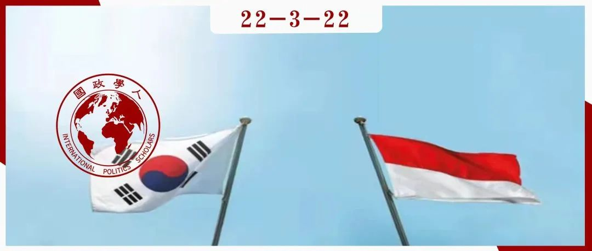

收录于合集

**
**
中等强国、地位寻求与角色概念：以印尼和韩国为例 ****
作者： Moch Faisal Karim，印度尼西亚比纳努桑塔拉大学国际关系系助理教授，主要研究方向为政治经济学和国际关系的交叉领域，目前的研究重点是印度尼西亚的外交政策、数字经济和新自由主义以及新兴力量在全球治理中的作用
编译： 陈思涵（国政学人编译员，中山大学国际关系学院）
来源： Moch Faisal Karim(2018). Middle Power, Status-Seeking and Role Conceptions: the Cases of Indonesia and South Korea. Australian Journal of International Affairs , 72(4), 343-363. DOI: 10.1080/10357718.2018.1443428

导读
本文运用角色理论，以印尼和韩国为研究对象，重点分析了角色概念、地位寻求和中等强国外交政策之间的关系。作者明晰了“中等强国地位”和“中等强国角色”两种概念，认为不同的角色构建能够更好地解释中等强国外交政策议程的差异及其角色偏好差异，并指出历史经验、自我期望和国际社会期望的改变等都会影响国家为追求中等强国地位而进行的特定角色构建。本文具有理论创新性，有助于通过角色概念丰富对中等强国国际行为的理解，也启示我们可以将角色理论更广泛地纳入中等强国研究之中。但正如作者所指出的，本文聚焦于比较分析，因而未能讨论自我期望和外界期望改变之间的动态关系或者历史角色影响国家追求中等强国地位的机制，这都有待未来的进一步研究。
本文结构清晰，思路流畅。作者首先回顾了中等强国研究中使用的主流方法及其在考察中等强国行为方面的局限性；接着讨论了国际关系领域有关角色理论和地位寻求行为的文献能够如何通过从概念上区分中等强国“地位”和“角色”来促进相关研究的发展；其后考察了角色概念构建的差异如何解释印尼和韩国在追求中等强国地位时行为的区别；最后在结论部分探讨了角色理论在理解中等强国地位寻求行为方面的潜力，并指出为更好地理解中等强国的不同行为，相关研究需要对作为中间变量的角色概念构建予以更多关注。
编译
01
引言
鉴于非西方大国在国际秩序中发挥着越来越大的作用，“中等强国”的概念已被广泛用于解释这些国家的行为。然而，这一概念在解释新兴国家的外交政策方面很难令人信服。许多物质层面可以定义为且自我认同为中等强国的国家并未严格遵循中等强国理论推定的外交政策行为。相关文献严重依赖传统的西方中等强国作为其理论来源。因此，有必要从不同理论角度来重振这一概念以更好解释中等强国外交政策的模式。
本文认为，角色理论的路径有助于考察中等强国在地区和全球层面的角色偏好，并完善中等强国研究。为此，本文将中等强国重新定义为一种各国旨在通过角色扮演来追求的国际地位概念。这一概念旨在说明国家为什么选择扮演特定的角色以追求中等强国地位。 角色概念可以将中等强国的地位寻求行为与其外交政策议程联系起来。为此，本文比较分析了印尼和韩国中等强国地位追求和转变过程中的外交政策。
本文有两方面贡献。 从概念层面讲， 它旨在进一步讨论角色理论如何完善中等强国研究，因为已有文献相对缺乏中等强国语境下讨论“角色”和“地位”之间关系的尝试。为更好理解中等强国的行为，本文将角色概念定位为一个连接地位寻求行为和外交政策议程的中介。 从实证层面讲， 本文分析了印尼和韩国对中等强国地位的追求，因为相关文献对两国在表达其对这一地位的渴望时的角色偏好关注较少。
本文讨论了印尼和韩国对中等强国地位的渴望如何转化为对几个主要角色概念的扮演。 印尼对中等强国地位的寻求是通过扮演地区领导者、发展中国家的代言人、民主倡导者和调停者的角色来实现的。韩国对中等强国地位的寻求则通过扮演地区平衡手、发展主义倡导者和调停者的角色来实现。这些角色在不断变化，并非稳定不变的。 通过比较，本文展示了不同的历史角色、自我、角色期望的改变以及角色冲突如何解释印尼和韩国在寻求中等强国地位的过程中角色概念表达的差异。 此外，两国在作为中等强国的自我认同方面存在分歧。 韩国政策制定者在自我认同为中等强国方面拥有丰富经验，因而表现出超越这一地位的雄心；而印尼政策制定者最近刚自我认同为中等强国，因此在地位寻求活动中缺乏雄心。
02
中等强国理论化的局限性
中等强国通常被定义为“在权力、能力和影响力方面既不强大也不弱小，并表现出为全球秩序和治理创造凝聚力和制造障碍的能力”， 相关研究有三条主线：地位、行为和身份路径。
冷战期间，现实主义的权力路径通过将中等强国置于国际体系的等级结构中来塑造这一概念。 这一系列文献被称为 等级或“地位”路径 ，强调一个国家在国际体系中的能力和地缘政治地位。这种注重物质能力的方法在定义中等强国时提供了有用的分析确定性，因而该术语不仅是一种国家分类工具，还被视为具有特定属性的地位。然而，该路径在解释中等强国的行为方面没有价值，例如它无法解释为何并非所有拥有中等实力的国家都愿意在国际秩序中发挥更大作用。
为了克服这些弱点，后冷战时代的文献更倾向于重新认识中等强国在国际秩序中的行为，即“行为”路径。 简而言之，这种对中等强国的理论化更多地关注外交政策行为而非权力的结构定义。行为路径更多涉及驱动中等强国在国际秩序中发挥更大作用的规范基础和道德。然而，这种路径并非没有局限性。有人批评它过于偏向澳大利亚、加拿大和北欧国家等传统中等强国，因为这一概念的理论化主要来自对西方工业化、高收入国家的分析。实际上，传统中等强国与新兴中等强国之间存在显著差异，前者是“富裕、稳定、平等、社会民主但不具备地区影响力的”；后者往往是“半边缘的、物质上不平等且最近才民主化但表现出强地区影响力和自缔合性（self- association）的”国家。此外，行为路径将中等强国的行为仅仅视为良好国际公民身份的函数，往往会忽略中等强国之间的各种动机，而将其行为简化为仅由类似的规范目的驱动，因此缩小了国家内部行为体影响国家行为的能力。本文认为，关于中等强国的讨论应该朝着新兴中等强国中的政策制定者如何表达他们对中等强国地位的渴望这一方向前进。
在某种程度上，建构主义范式下身份路径的引入增进了对这一问题的理解。 中等强国研究已经吸收了身份形成的研究。鉴于身份是相对固定和国家主权中心的，将中等强国视为一种建构的身份也是存在问题的。国家身份通常是一个国家的半永久性特征，并植根于社会、政治和历史信念中。此外，身份路径很少阐明身份与外交政策议程之间的动态关系，尤其是中等强国身份如何转化为外交政策议程。尽管如此，建构主义路径提供了一个新方向，表明不应将中等强国视为一个固定的概念或分类；相反，它更像是政策制定者追求构建的一种概念。在建构主义路径的基础上纳入国际关系领域日益增长的角色理论研究，可以更好地理解新兴中等强国外交政策的变化及其决定因素。
03
作为地位的中等强国和作为角色的中等强国
为了将角色理论纳入中等强国研究，我们需要在概念上区分“中等强国地位”和“中等强国角色”。 鉴于在文献中发现的“地位”和“角色”的多种用法并不罕见，进一步阐明二者之间的关系也很重要。 一般来说，角色概念指的是外交政策制定者对其国家在国际体系中的地位的看法。 就中等强国研究而言，角色理论可以通过具体考察地位路径所倡导的结构和物质利益以及行为路径所倡导的规范如何激励中等强国追求其地位，从而捕捉中等强国在国际秩序中扮演的各种角色。此外，它还可以捕捉国家内部的政治动态，这也会影响中等强国的地位寻求行为。作为自变量，角色概念可以被视为关于国家在国际秩序中行为的解释变量。作为因变量，角色概念是通过国家与国际体系之间的动态互动以及国家内部政治格局的变化而形成的。可以说，角色概念在连接地位寻求活动和外交政策议程方面很重要。
地位往往被定义为物质能力的一个函数。本文认为，应将地位路径和行为路径结合起来，在两个共识标准内确定中等强国地位：一个是客观的衡量标准，如国家在物质能力方面的中等排名；另一个则是行为路径提倡的通过多边论坛在地区和全球秩序中的参与和积极性 。国际关系领域中有关地位寻求的现有研究已经证明，地位寻求也会受到期望改变即国际体系中其他国家的承认的影响。与大国地位不同，自我认同在驱动中等强国的地位行为寻求方面也很重要。但并非所有国家都愿意被认定为中等强国。此外，当政策制定者不再认同其国家的中等强国地位时，追求这种地位的行为就不复存在。 因此，自我认同成为中等强国地位的一个基本特征。
与主要是静态的地位不同，角色是动态的，因为它们不仅由期望改变所引起，也通过与其他行为体的互动而产生。 与其根据传统和新兴中等强国之间的区别来区分中等强国行为，不如通过考察各个国家的角色概念以更好理解中等强国的行为变化。因此，本文并非仅仅将中等强国视为物质能力或良好国际公民身份的函数，而是表明中等强国行为是由政策制定者为在国际秩序中发挥更显著作用而扮演的角色概念所驱动的。
在有关角色理论的文献中， 角色概念是通过两个过程建构的，即期望改变和自我期望。 期望改变强调角色定位过程类似于建构主义语境中的社会化，主要由重要的他者进行，如体系内的大国和国际机构。自我期望可以被视为角色概念的国内来源，包括国内政治环境和历史因素。
此外，国家在国际体系中可能扮演多重角色，而角色之间的矛盾会导致角色冲突。角色冲突能够解释新兴国家在地区和全球秩序中看似矛盾的角色。以下四种模式中，角色冲突更有可能出现：如果（1）他者的角色期望模糊或不一致；（2）缺乏实现这一角色的资源；（3）国家处于一种规范和期望存在分歧的状态中；（4）国家的利益或目标与国家角色的外部期望不相容。
04
角色扮演和对中等强国地位的追求
尽管都自我认同为并被期望表现为中等强国，印尼和韩国在追求中等强国地位方面的角色各不相同。本文意在通过考察角色概念构建如何使这些国家在地区和全球层面作为中等强国发挥更显著作用，来展示历史经验、自我期望和期望改变如何解释其在追求中等强国地位时所扮演的不同角色。
1.印尼作为中等强国的角色扮演
与其他新兴国家一样，印尼在全球层面发挥更大作用的动力是其物质能力和近期政治与经济发展的逻辑结果。 印尼是世界上人口第四大国，也是东南亚地区面积和经济规模最大的国家。自2004年以来，印尼的经济取得了显著发展。在尤多约诺总统任期内，印尼政治更稳定，民主化进程更平稳。此外，作为世界上人口最多的穆斯林国家，印尼已成为伊斯兰世界和发展中国家民主运作的典范。这些成就提高了国际社会对印尼在全球层面发挥更显著作用的期望。
在尤多约诺任总统期间（2004-2014），印尼寻求通过更多地参与全球治理和多边论坛来加强其国际地位，例如主办国际峰会，寻求重振亚非战略伙伴关系。虽然就其物质能力而言，印尼可以被归为中等强国，但这一概念很少在印尼外交政策圈的政治话语中使用，彼时许多当权者认为这种定义带有俯就的姿态，直到佐科任总统期间（2014-2019），“中等强国”一词才纳入官方中期发展计划。 印尼根据其历史经验、国内变化和国际期望，通过四个主要角色概念——地区领导者、发展中国家的代言人、民主倡导者和调停者，来追求中等强国地位。
在尤多约诺总统任期内，印尼的目标并非在东南亚地区本身扮演地区领导者的角色，而是进一步利用这种角色在全球层面追求中等强国地位。 例如，在二十国集团（G20）中，印尼一直是东盟国家的代表。在更广泛的亚太地区，鉴于中国崛起和美国衰落带来的体系性变化，印尼“肩负着”通过扮演地区平衡手的角色来维持该地区力量均势的期望。可以发现，印尼的政策制定者并未重新配置印尼的国际角色以使其外交政策与其对中等强国地位日益增长的自我认同保持一致。相反，他们通过将其范围扩大到全球舞台，继续扮演印尼作为地区领导者的角色。
事实上，关于中等强国行为的文献倾向于将中等强国描述得更具全球意识而非关注地区层面，这可能适用于传统中等强国的利基外交（niche diplomacy）。 但对印尼等新兴中等强国而言，在地区扮演领导者角色是提高其全球影响力的关键，这也是其历史经验的结果，其作为地区领导者的角色在苏哈托任期内被制度化。 因此，为避免角色冲突，印尼的中等强国地位需要通过这个角色实现。
此外，由于缺乏资源或缺少在资源上花费更多的意愿，印尼日益增长的国际角色在很大程度上取决于其在国际机构中利用国家规范和道德权威的能力。 鉴于其成功的民主过渡，人们对印尼在东南亚地区发挥更大的作用抱有更大期望，其开始扮演民主倡导者的角色。在尤多约诺总统任期内，通过在东盟机制内将民主和人权规范社会化来促进该地区的民主成为印尼在东盟的主要外交政策议程。
尽管印尼仍然高度支持自由主义秩序，它在口头上同金砖四国一样希望重新安排全球秩序。 印尼的立场可以解释为一种管理其历史角色与当前期望之间紧张关系的方式。 印尼在建国初期由苏加诺促成的为发展中国家发声的历史角色，导致它对西方全球秩序采取了被视为略微修正的立场，它通过实际斗争抵制殖民主义的经验也在使反殖民主义精神成为其外交政策目标的一个组成部分方面发挥了重要作用。
此外，印尼在处理国际社会的各种问题方面也继续扮演着调停者的角色。 为此，它一直将本国定位为一个优先努力建立共识、弥合分歧、强调利益趋同而非分歧的国家，同时在总体上优先考虑发展中国家的利益。但这一角色有时会与民主倡导者等角色冲突。印尼在追求中等强国地位时扮演的角色也受到其自我期望变化而非外部期望改变的极大影响。虽然在佐科总统任期内，印尼作为发展中国家代言人的角色有所增长，但作为民主倡导者的角色却大大减少，因为人们认为这种角色缺乏益处。这也表明与更制度化的角色相比，在追求中等强国地位时扮演的新角色概念不太可能稳定。
根据上述实证，印尼自我认同的根本基础是缺乏地位寻求活动的雄心。这是因为印尼对中等强国地位的自我认同是由国际社会的期望改变驱动的。 尽管印尼被认为是一个中等强国，但它一直受到对地区层面关注的限制。这一点从其坚持扮演地区领导者角色以展示全球前景中可见一斑。
2.韩国作为中等强国的角色扮演
相比印尼，韩国更自我认同其中等强国地位，以证明其自1991年以来在全球层面上有更大的参与度。 从历史角度来看，韩国一直对其地区和全球地位很敏感，因为它认为它在20世纪一半时间内因被占领而蒙羞，另一半时间内则成为大国竞争的受害者。这在韩国创造了一种促使其在国际秩序中取得突出地位的动力。与印尼不同，韩国表现出超越中等强国地位的野心，这可以追溯到韩国自20世纪90年代中期以来对中等强国地位的强烈自我认同。 鉴于经济的显著发展使韩国成为一个发达国家，中等强国地位已成为当代韩国外交政策圈希望该国与之相联系的主要概念。
金大中任总统期间（1998-2003），韩国在国际秩序中提升其中等强国地位的雄心终于得到推动，包括使东亚合作进程进一步制度化，以及对朝鲜的“阳光政策”。 卢武铉任总统期间（2003-2008），追求中等强国地位继续成为韩国的外交政策目标。 卢武铉对韩国在东北亚地区内中等强国角色的更大关注主要由三个因素驱动，即中国崛起、朝鲜核崛起和日本重新军事化的不确定性。 卢武铉注重提升韩国作为地区平衡手的中等强国地位，意在使韩国成为东北亚地区的经济和政治中心，这一愿景要求韩国加强与中国的关系，并向美国寻求更大的自主权。为了提升其在该地区的中等强国地位，卢武铉还试图通过在朝鲜核问题上进行斡旋、和平处理美中之间的战略不信任、减轻大国在该地区竞争的影响来扮演调停者的角色。但韩国作为地区平衡手和调停者的角色概念却被视为卢武铉政府背离其作为美国忠实盟友和地区次体系合作者的历史角色的战略。美国并不指望韩国充当地区平衡手的角色，因为美国认为这是对韩国在该地区与其强大关系的背离，也是朝着与中国发展更密切关系的方向前进。
李明博任总统期间，韩国更倾向于扮演在全球层面发挥更大作用的角色，主办了G20领导人会议（2010）、第四届援助有效性高级别论坛（2011）和核安全峰会（2012）。 李明博对全球层面的关注可以被解释为一种减少与其历史角色以及美国作为一个重要他者的期望发生冲突的机会的方式。 在此处，角色冲突概念可以更好地解释为什么韩国从之前设想的作为地区平衡手的中等强国角色转变出来。尽管对中等强国地位的自我认同仍然完好无损且更为根深蒂固，韩国受避免角色冲突出现的需要的驱动，改变了角色概念的扮演。
此外，在李明博总统的领导下，韩国在一代人的时间内实现了从第三世界到第一世界的显著转变。 为反映这一转变，李明博政府的目标是通过扮演推销韩国自身发展模式的发展倡导者的角色来追求中等强国地位。 这一角色被转化为韩国在推动绿色增长作为可持续经济增长模式替代方案的话语方面的领导力，以及它在发展合作中日益增强的自信。韩国的发展型国家模式将韩国从一个受援国转变为国际发展合作的主要援助国。在李明博政府时期，援助成为韩国在亚洲以外世界其他地区参与全球事务的工具。 为实现中等强国地位，韩国积极提供发展中国家和发达国家都能接受的动议，如积极推动超越“援助有效性”的“发展有效性”概念，在许多全球问题上扮演调停者的角色。 尽管其在东北亚地区的调停者角色因其与作为美国忠实盟友的历史角色概念的角色冲突而受到来自美国的负面期望的挑战，但其在全球层面对调停者角色的扮演并未遇到同样争议，因为这与美国的期望和韩国的历史角色一致。
对韩国的分析表明，历史角色在一国追求中等强国地位时扮演的角色概念方面影响显著。与历史角色不相容的角色概念更可能被国内观众抛弃或挑战。 此外，韩国的重要他者——美国，也在其作为中等强国的角色概念扮演中发挥了重要作用。韩国从一个沉重的地区平衡手向发展倡导者的角色概念的转变表明，历史因素和期望改变都是驱动其中等强国角色偏好的关键因素。
05
结论
本研究旨在将对中等强国理论化的重点从主要将其视为具有特定行为的僵化分类转化为讨论角色概念在塑造中等强国在国际秩序中发挥更大作用的角色偏好方面的重要性。角色理论有助于理解其所扮演的角色的变化。 具体而言，本文发展了角色概念、地位寻求与中等强国外交政策之间的联系。 分析表明，角色概念可以将中等强国的地位寻求行为与其外交政策议程联系起来，角色理论在理解中等强国的地位寻求行为方面具有双重性。
第一，通过观察角色概念的构建，我们可以分析中等强国在地区和全球层面的不同轨迹。 本文详细展示了为追求中等强国地位而扮演的特定角色是如何通过历史经验、自我期望和期望改变来组成的。这三个角色概念化过程的差异可能意味着中等强国在追求全球层面的更高地位时扮演了不同角色。因此，可以通过理解中等强国角色概念的构建来理解其角色偏好差异。 第二，分析表明，角色理论的引入可以为中等强国对全球层面更大角色的追求与国内、地区限制因素之间的紧张关系提供一个更为微妙的解释。 这种紧张关系可以归因于对新兴国家的不同角色期望，这可能会阻碍它们追求中等强国地位。可能导致国内观众竞争和他者负面期望的角色冲突的出现，会使中等强国减少对某些角色而增加对其他角色的扮演，从而导致其角色偏好变化。
词汇整理
中等强国 Middle Power
角色扮演 Role Enactment
自缔合性 Self-association
利基外交 Niche Diplomacy
审校 | 杨佳霖 董 黛
排版 | 顾金源 杨凌晶
文章观点不代表本平台观点，本平台评译分享的文章均出于专业学习之用, 不以任何盈利为目的，内容主要呈现对原文的介绍，原文内容请通过各高校购买的数据库自行下载。

国政学人
支持学术公益与知识传播
微信扫一扫赞赏作者 __赞赏
已喜欢，对作者说句悄悄话
取消 __
发送给作者
发送
最多40字，当前共字
上一页 1/3 下一页
长按二维码向我转账
支持学术公益与知识传播
受苹果公司新规定影响，微信 iOS 版的赞赏功能被关闭，可通过二维码转账支持公众号。